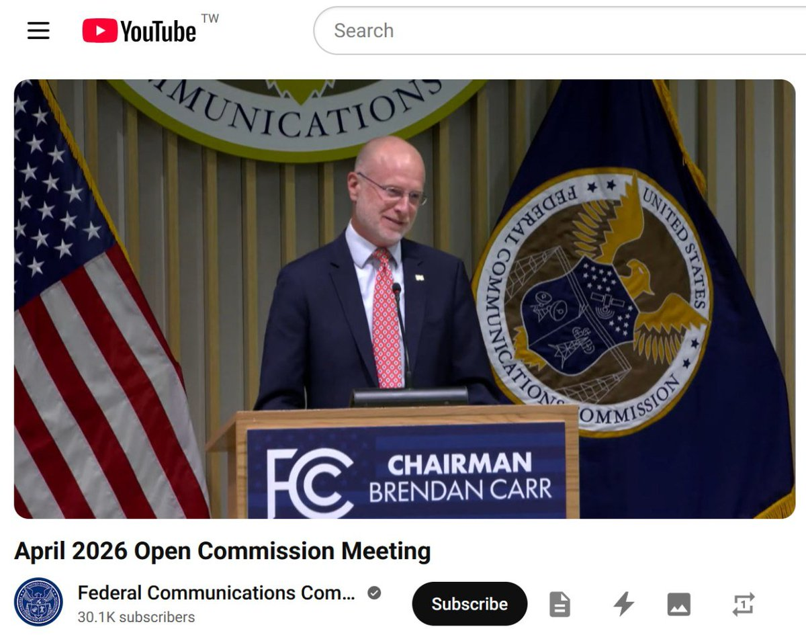

这下不止中国大陆，连香港到美的互联也要玩烂了！
FCC表决撤销中资运营商的一揽子授权之提议，目的是堵住 2022 年的法律漏洞：即使「中资运营商」的通信牌照被撤销，它们仍可根据一揽子授权（Blanket Authority）自动获得美国国内的州际电信服务资质
会议中最激进的部分是关于禁止互联（Interconnection）的讨论，即讨论将从物理上禁止Verizon、AT&T等美资运营商与中资运营商的互联。如此一来，不仅电信、联通、移动、中信的美国电信业务被踢出局，还会连带IDC、IXP、PoP一同被赶这次行动会祭出「股权穿透」大招，即电信、联通、移动、中信的本体及其占股 >= 10% 的关联公司，都会因此连坐
其中香港运营商PCCW和HKT都满足「股权穿透」条件，大概还有30-60天的公开征求意见期，以及可能的上诉法院司法审查。三大运营商＋中信的游说团和律师团虽说要出动，但翻盘的成功率很低，因为但凡涉及national security这种包装话术，即使走到美国上诉法院，都免不了支持 FCC 提案，这毕竟符合美版《总体国家安全观》
FCC表决撤销中资运营商的一揽子授权之提议，目的是堵住 2022 年的法律漏洞：即使「中资运营商」的通信牌照被撤销，它们仍可根据一揽子授权（Blanket Authority）自动获得美国国内的州际电信服务资质
会议中最激进的部分是关于禁止互联（Interconnection）的讨论，即讨论将从物理上禁止Verizon、AT&T等美资运营商与中资运营商的互联。如此一来，不仅电信、联通、移动、中信的美国电信业务被踢出局，还会连带IDC、IXP、PoP一同被赶这次行动会祭出「股权穿透」大招，即电信、联通、移动、中信的本体及其占股 >= 10% 的关联公司，都会因此连坐
其中香港运营商PCCW和HKT都满足「股权穿透」条件，大概还有30-60天的公开征求意见期，以及可能的上诉法院司法审查。三大运营商＋中信的游说团和律师团虽说要出动，但翻盘的成功率很低，因为但凡涉及national security这种包装话术，即使走到美国上诉法院，都免不了支持 FCC 提案，这毕竟符合美版《总体国家安全观》
